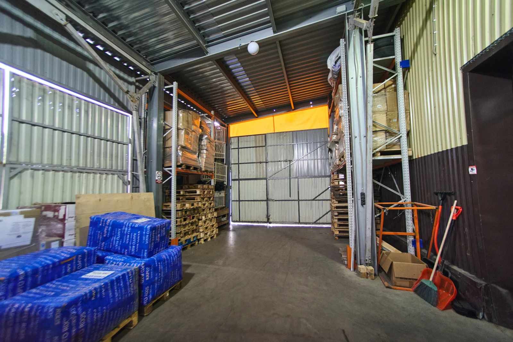

Проверено в исходнике: 18 сентября 2026 · Восстановлено: 4 ноября 2026
Правила упаковки и отгрузки FBO Ozon в сентябре–октябре 2026
FBO Ozon требует согласовать не только упаковку товара, но и саму схему поставки: заявку, временной интервал, грузоместа, маркировку и данные автомобиля. Ошибка на любом из этих этапов может задержать приемку или привести к возврату поставки.
Если нужен подрядчик, который выполнит складскую часть процесса, Преп-Центр оказывает услугу подготовки поставок FBO Ozon под ключ: приемка, сортировка, упаковка, этикетки, маркировка и формирование грузомест.
> Изменение в сентябре 2026. На 18 сентября Ozon уже опубликовал следующую редакцию регламента FBO, которая должна применяться с 23 сентября 2026 года. Перед поставками после этой даты обязательно сверяйте официальный регламент еще раз.

Короткий чек-лист FBO Ozon
Перед отправкой партии проверьте:
- Заявка на поставку создана и соответствует фактическому составу партии.
- Выбран и подтвержден временной интервал поставки.
- Данные автомобиля и водителя внесены в установленный срок.
- Каждый товар имеет подходящую индивидуальную упаковку.
- Штрихкоды и обязательная маркировка читаются.
- Срок годности указан там, где он обязателен.
- Короба и паллеты собраны как отдельные грузоместа и имеют нужные этикетки.
- Перед выездом проверена действующая редакция регламента Ozon.
Заявка и временной интервал поставки
Поставка на FBO начинается в кабинете продавца. Товары, количество и выбранный склад в заявке должны соответствовать тому, что реально приедет на приемку.
В регламенте Ozon используется заранее выбранный временной интервал. Изменение или отмена поставки также подчиняется срокам, указанным в кабинете и регламенте.
Данные автомобиля и водителя нужно внести до прибытия. По действующей редакции регламента часть данных допускается добавить не позднее чем за 1 час до поставки, но этот срок нужно перепроверить перед выездом: Ozon регулярно обновляет процедуру.

Короба как грузоместа
Для коробной поставки каждый короб считается отдельным грузоместом.
По текущему регламенту:
- вес короба до 25 кг;
- короб должен быть сухим и целым;
- упаковка должна выдерживать складское перемещение;
- на каждом грузоместе должна быть соответствующая этикетка поставки.
Этикетку грузоместа нельзя использовать вместо товарной этикетки на единице. Это разные уровни маркировки.
Индивидуальная упаковка товара
Индивидуальная упаковка должна защищать товар во время приемки, хранения, комплектации и последующей доставки покупателю.
Для жидких товаров, косметики и бытовой химии особенно важны:
- герметичность;
- фиксация крышек и дозаторов;
- защита стеклянной и хрупкой тары;
- читаемая маркировка после финальной упаковки.
Для таких операций Преп-Центр использует ВПП и термоусадочную упаковку по выбранной схеме товара.
Что должно читаться на товаре
В зависимости от категории Ozon проверяет сведения, которые обязательны для конкретного товара. Среди них:
- штрихкод, соответствующий товарной позиции;
- название товара;
- срок годности, если он обязателен;
- Data Matrix для маркируемой продукции;
- другие обязательные сведения категории.
Если финальная пленка или дополнительный короб закрывают код, маркировку нужно продублировать в корректном месте.
Преп-Центр печатает и наносит этикетки Ozon после упаковки партии. Для маркируемых категорий отдельно выполняется работа с кодами «Честного знака», переданными клиентом.
Разные SKU и разные сроки годности
Если в одном коробе находятся разные SKU, их нужно физически разделить внутри транспортной упаковки пленкой, бумагой, картоном или другим допустимым материалом.
Товары одного SKU с разными сроками годности также требуют раздельной укладки. Это упрощает приемку и снижает риск ошибок при учете.
Для смешанной партии перед упаковкой полезно сначала провести сортировку и комплектацию по SKU и срокам.
Как готовить наборы
Если товар продается как комплект, он должен оставаться одной товарной единицей. Части набора фиксируются общей упаковкой так, чтобы комплект не распадался при приемке и перемещении.
Для наборов из нескольких коробов используются специальные обозначения и нумерация частей. Маркировку нужно делать по актуальному регламенту Ozon.
Что Ozon может не принять
К типовым причинам проблем при приемке относятся:
- поставка не соответствует заявке;
- нет обязательной индивидуальной упаковки;
- повреждены короба или другая транспортная тара;
- штрихкод не читается или не соответствует товару;
- отсутствует обязательный срок годности;
- обязательная маркировка повреждена или нечитаема;
- грузоместо промаркировано неверно;
- комплект распадается на отдельные части.
Для крупной партии проверка контрольного образца до запуска всей смены обычно дешевле, чем переделка сотен или тысяч единиц.
Что может сделать Преп-Центр
Для FBO Ozon можно собрать один производственный цикл:
- принять товар;
- разделить его по SKU;
- проверить комплектность и внешний вид;
- выполнить ВПП, термоусадку или другую предусмотренную упаковку;
- нанести этикетки Ozon;
- нанести переданные клиентом Data Matrix, если это требуется;
- собрать наборы;
- сформировать короба и паллеты;
- подготовить грузоместа к отгрузке.
Для партий с жестким дедлайном есть срочная обработка. Стоимость зависит от набора операций и материалов, действующие позиции собраны в прайсе Преп-Центра.
Официальный источник Ozon
Основной источник для проверки – официальный регламент Ozon для поставок FBO:
Частые вопросы
Сколько может весить короб FBO Ozon?
По регламенту, проверенному 18 сентября 2026 года, коробная поставка использует грузоместа весом до 25 кг. Перед фактической отгрузкой ограничение нужно сверить с текущей редакцией Ozon и условиями выбранного склада.
Можно ли смешивать разные SKU в одном коробе?
Да, если правила конкретной поставки это допускают, но товары разных SKU нужно разделить внутри короба. Для товаров с разными сроками годности также требуется раздельная укладка.
Нужна ли товарная этикетка, если на коробе есть этикетка поставки?
Да. Маркировка грузоместа и маркировка отдельного товара выполняют разные функции. Этикетка короба не заменяет штрихкод и обязательные сведения на единице.
Нужно ли указывать срок годности на косметике и бытовой химии?
Для категорий со сроком годности эти данные обязательны. Конкретный формат и место нанесения нужно проверять по требованиям Ozon и обязательной маркировке категории.
Когда проверять новый регламент Ozon?
Перед созданием крупной поставки и еще раз перед отгрузкой. В сентябре 2026 это особенно важно: новая опубликованная редакция должна вступить в силу 23 сентября.
Может ли Преп-Центр подготовить FBO Ozon целиком?
Да, склад может выполнить приемку, упаковку, маркировку, комплектацию и формирование грузомест. Подробная коммерческая схема описана на странице FBO Ozon.

Рассчитать подготовку FBO Ozon
Для предварительного расчета пришлите фото товара, количество единиц, число SKU, предполагаемый склад Ozon и дату поставки.